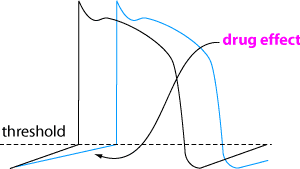

Class 2 antiarrhythmics - β blockers

β adrenergic blockers
Dozens of β adrenergic antagonists (mainly specific β1
blockers) are available for people but propranolol is the only drug widely used
in animals (because it is cheap, not because it is a great drug).
Propranolol is a non specific β adrenergic antagonist
- ie, it blocks both β1 and β2 receptors. Its
anti-arrhythmic effects are caused by decreasing catecholamine dependent automatic
rhythms and slowing conduction in abnormal ventricular myocardium - also increase
the refractory period of AV nodal tissue, so slowing down the ventricular response
to atrial fibrillation and flutter and effectively abolishing supraventricular
arrhythmias due to A-V node re-entry. By decreasing contractility it also decreases
myocardial oxygen consumption
Indications
supraventricular tachyarrhythmias
feline hyperthyroidism to prevent myocardial hypertrophy
(used for congestive heart failure in people)
Pharmacokinetics
Absorption - oral - well absorbed and almost complete - biavailability
between 2 - 17% after first pass effect in the liver
Distribution - highly lipid soluble and readily crosses the blood brain
barrier
Metabolism - has extensive first pass effect in the liver: half life
in dog is 1-2 hours. Effects seen longer than half life because of active metabolites
and receptor binding
Elimination - renal with less than 1% unchanged
Side effects and Toxicity
bradycardia, myocardial depression - may make congstive heart failure worse,
hypotension, bronchospasm (β2 block)
can get exacerbation of side effects with acute withdrawal of therapy
Contraindications
•overt heart failure
•greater than first degree heart block
•asthma or chronic lower airway disease due to beta blocking as it may further constrict airways
•caution in diabetics as get decreased sympathetic compensation for hypoglycaemia
•care in patients with renal or hepatic insufficiency
•care when using in combination with digitalis
| 6 Cardiovascular index |
| |
copyright
Massey University
|